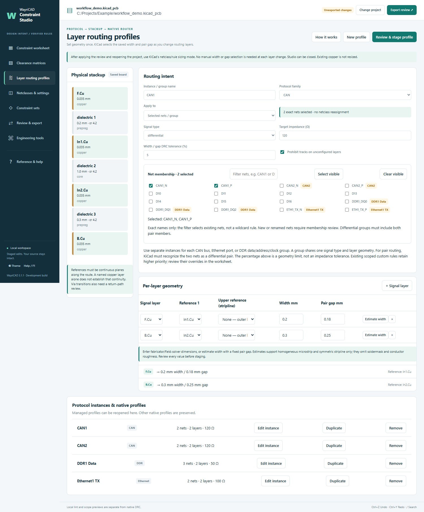
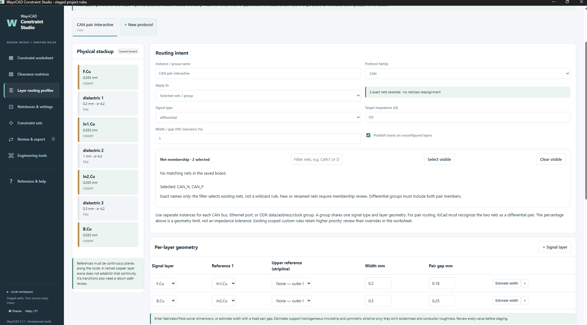
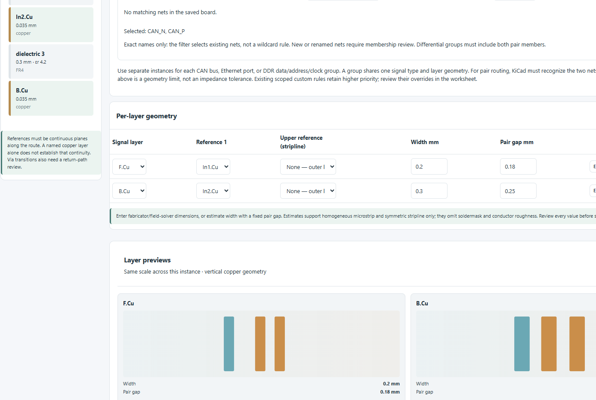

What changes automatically?
After you apply the profile and reopen the project, KiCad chooses the saved width and pair gap for a new route started on each configured layer. Constraint Studio does not have to stay open.
Example numbers in the screenshots are illustrative. Set widths, gaps, clearances, references and via sizes for your actual board and fabricator.
Save the board and its physical stackup
- Open the project in KiCad PCB Editor. In Board Setup, verify the enabled copper layers, dielectric thicknesses and copper thicknesses.
- Save Board Setup and the PCB. Confirm the nets you intend to route are in the saved board.
- Open Tools → External Plugins → WayriCAD Constraint Studio. If the board was saved while Studio was open, return to the clean Studio window or use Reload saved board. Export or undo staged edits before reloading.
Create a profile for each protocol instance
- Select Layer routing profiles in the left sidebar, then New profile or + New protocol (label varies by build).
- Name the specific bus, for example
CAN1. Choose its protocol family and Signal type: single-ended or differential. - Under Apply to, choose Selected nets / group or an existing netclass. Search the saved-board net list and tick the exact members. For a pair, select both members, such as
CAN_PandCAN_N. The family label alone does not create a KiCad differential pair. - Use a separate tab for
CAN2, an Ethernet port, DDR data, address or clock groups when they need different geometry. Duplicate copies geometry but clears net membership.


Enter geometry for every permitted layer
- Click + Signal layer for each copper layer the group may use. Select the actual signal layer and its reference plane; for an internal stripline, provide the relevant upper and lower references where applicable.
- Enter Width mm and, for differential routing, Pair gap mm for each row. The gap is edge-to-edge between pair traces. Use verified stackup or fabricator values. Estimate width is only a screening approximation with a fixed gap.
- Compare the side-by-side Layer previews. Select Trace, Pair or Trace + pair mode if available. The copper shapes should visibly change as you edit widths and gaps.
- Choose whether to Prohibit tracks on unconfigured layers. This is useful when every allowed signal layer has a row; it does not ban vias.
| Illustrative row | Width | Pair gap | Meaning |
|---|---|---|---|
F.Cu | 0.20 mm | 0.18 mm | New route on front copper uses front-layer geometry. |
B.Cu | 0.30 mm | 0.25 mm | New route on back copper uses back-layer geometry. |

Review the optional via recipe
If this bus needs a particular via, choose its type (through, microvia, blind or buried), copper diameter, drill, and a valid start/end layer span for non-through vias. Use saved sizes can copy a netclass's dimensions for review. Confirm that the stackup and Board Setup permit that via type and that manufacturing floors are met.
Stage, review, export and apply
- Click Review & stage profile. Resolve local errors such as missing nets, overlapping assignments, stale stackup or invalid dimensions.
- Open Review & export. Inspect Local findings, File diff and Native rules. Export the review to a new empty folder, then run native KiCad DRC on that exported snapshot.
- Click Open Apply Review. Before confirming its write, close every KiCad editor for the source project. Review the helper's file list; it checks source fingerprints and creates backups.
- Reopen the project in KiCad PCB Editor. The applied settings persist with Studio closed. If you change the stackup later, reopen Studio and restage the profile.
Route from one layer to another
- In PCB Editor, use netclass/rule-driven sizing for tracks or differential pairs. Clear any explicitly chosen manual width or gap. Turn the toolbar's Auto track width option off.
- Start a new single-track or differential-pair route on the first configured layer. Check the width, and for a pair the gap, shown by KiCad's router against that layer's profile row.
- Place the appropriate transition via. Finish the active route at the via.
- Switch to the destination layer, start a new route from the via and check that KiCad now selects the destination layer's width and pair gap. Repeat for each transition.
- Save the PCB and run native DRC. Inspect both members of a differential pair and each via/return-path transition.
Verify that it worked
- Start a new route on each configured layer and inspect KiCad's displayed width or pair gap. The destination-layer value should be selected without a manual size change.
- Save, close and reopen the project. Repeat one route-start check with Constraint Studio closed to verify persistence.
- Inspect the saved track properties and run DRC for wrong widths, pair gaps, via dimensions and layer restrictions. Existing tracks are not resized by the new profile.
- If using several CAN, Ethernet or DDR groups, test a net from each instance. Exact-net membership does not auto-include a newly named net.
The recorded KiCad 10.0.6 single-track check measured 0.20 mm on F.Cu and 0.30 mm on B.Cu after a route restart with Auto track width off. A user subsequently confirmed differential-pair layer routing in their session; the repository does not contain a measured route capture for that pair test.
If a size does not change
| Symptom | Check |
|---|---|
| Net list is empty or stale | Save the PCB, return to a clean Studio workspace, then use Reload saved board. Ensure both pair members are on the saved board. |
| New layer keeps the old width | Turn Auto track width off; finish at the via and start a new route on the destination layer. Clear manual size overrides. |
| Wrong pair gap | Confirm KiCad recognizes the two names as a pair, the group includes both nets, the destination layer has a gap row, and a higher-priority scoped rule is not overriding it. |
| Wrong via type | Select the via type in the router; the Studio via recipe is a DRC constraint, not automatic router selection. |
| Changes absent after staging | Export, apply the review with source editors closed, then reopen the KiCad project. Stage alone changes only the Studio workspace. |
| Profile marked stale | The saved stackup or owned rules changed. Review them in Studio and restage rather than relying on old geometry. |
Further technical limits and recorded checks: Automatic layer routing profiles.